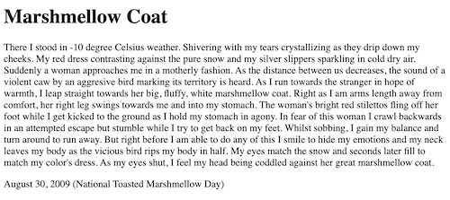
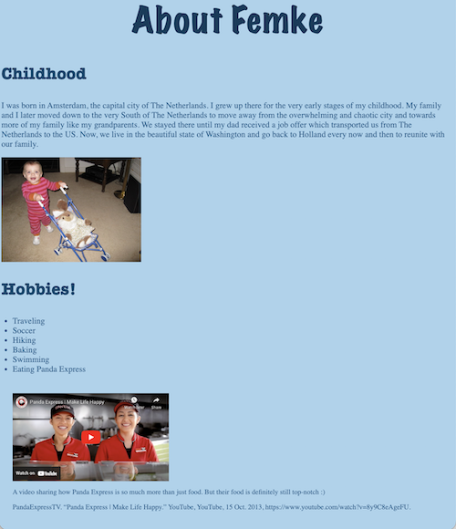
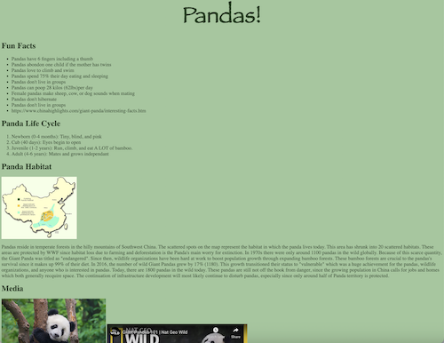
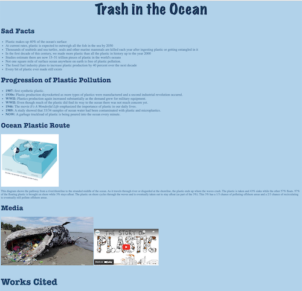
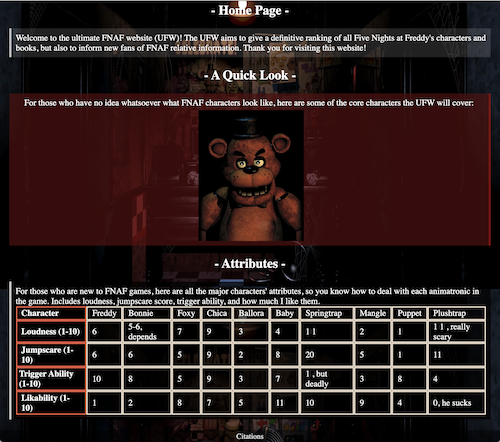
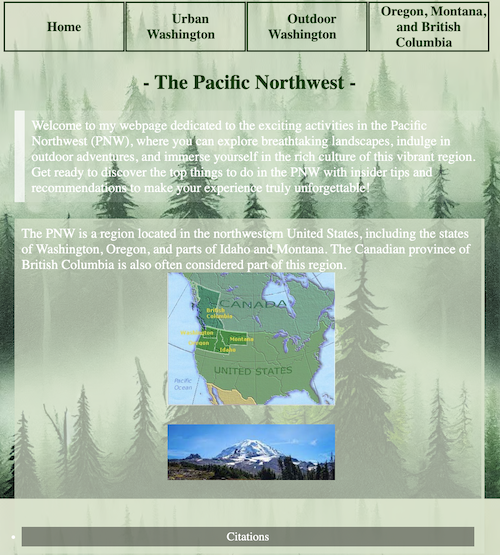
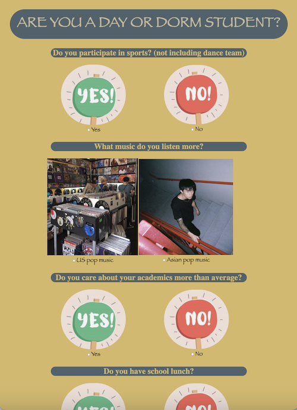
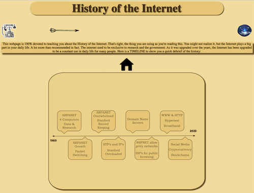

This frightening story encapsulates a small child being viciously killed by a winged animal as the young kid seeks warmth from a motherly figure. While this isn't a true reccurring dream, it does capture a thrilling storyline. I created this with Winnie Jiang, go check out her side of the story for a hefty plot twist. Definitely worth a read if you are up for a good story. It was one of the most fun projects to create since it really allowed Winnie and I to spark our creativity.
Are you in love with the author/creator of this webpage? If so, you are in luck since there is a webpage dedicated fully towards the creator. On this webpage you will figure out about the amazing creator's childhood, favorite restaurant, hobbies, and daily routine. Just about everything you need to know. This project is one of the creator's favorites due to the cute baby photo included as an image. You should definitely check it out.
Animals are widely appreciated by many people. Some people favorite certain animals more than others however. In this webpage, you get to learn about arguably the best animal in the world. An animal who nearly faced extinction. The vicious, the precious, the beautiful, Giant Pandas. This webpage focuses on the best of them all. Fun facts, cool videos, daily life, you name it. You should definitely check out the page if you are an animal lover just like the creator. This project was very fun and interesting to create since it educates both the creator and the reader.
The environment is dying, the time is just dependant on the rate you compare it to. Environmental problems are seen everywhere across the globe. There are so many issues it would take many months or even years to create webpages about all of them. As a result, I chose something relatable to everyone and every country, something very large, yet something powerful leaders haven't recognized as a major issue yet and thus haven't put time and resources towards that are recquired to make any progress towards this problem. This topic is: plastic or any form of trash in the ocean. This webpage shows some graphic photos and facts about the effects its having on our planet, the history of trash pollution into bodies of water, and the route a single piece of trash follows as it is carried out to sea, never to be found by humans again.
A collector's guide, what would you collect. In this partner coding project, my partner came up with the most obscure topic. You would never guess it. What if I gave a hint? It's a book series and has many video games in connection with the books. Many people find themselves getting scared by the animatronics when reading or playing the games. You probably still don't know what it is, but it's called FNAF. Still don't know what it is?!?! It stands for Five Nights at Freddy's. The webpage regarding FNAF gives you a rundown of what it's about, lists the characters and its attributes, gives a timelined history, and talks about the bookline series in order. This project was really fun to work on in general and created many positive experiences. In terms of Design, this is definitely one of the better webpages I have worked on.
PNW also known as the Pacific Northwest is a region in the US with beatiful nature and cities. This webpage is the complete guide for activities in both urban and outdoor areas of the region. The guide specializes in Washington State given it is the best state if you want a good combo of urban and outdoor areas not too far from each other. The webpage allows you to select the activities based on whether you prefer the urban or outdoor areas better. In general, this is a good webpage to get you fascinated about traveling and exploring so that you really get to experience what's out there. This project was another thrill to make and these activities have definitely been moved to the priority section of my bucket list.
Survey Alert!!! Take a quiz now to see if you are more classified to be a day or dorm student. This quiz asks questions based on the stereotypical behaviors we (me a day student in collaboration with Amy a dorm student) have observed from both day and dorm students on a regular basis. It's really cool to see that people have gotten accurate results from taking the quiz. This project was definitely more of a challenge since it involved JavaScript for the first time ever. I definitely enjoyed my time during this partner project and learned a lot from it.
This webpage is 100% devoted to teaching you about the History of the Internet. That's right, the thing you are using as you're reading this. You might not realize it, but the Internet plays a big part in your daily life. A lot more than recommended in fact. The internet used to be exclusive to research and the government. As it was upgraded over the years, the Internet has been upgraded to be a constant use in daily life for many people.
Recurring Dream About Creator Favorite Animal Environmental Action FNAF PNW Guide Day or Dorm Quiz History Of The Internet |